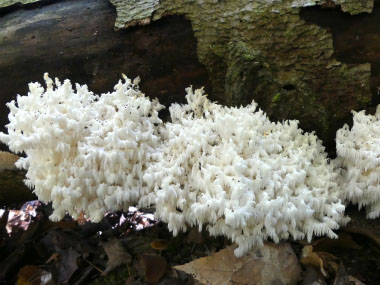
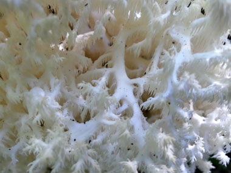
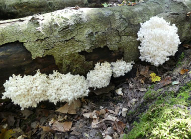
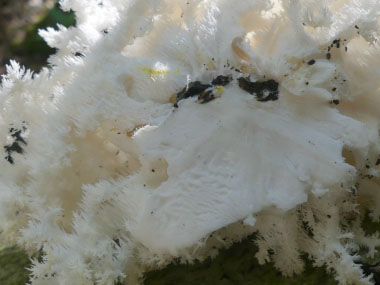
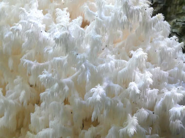

Has been found once on the property, but was not harvested because of the limited number of mushrooms.

Hericium coralloides was formerly known as Hericium ramosum so this name may come up in online searches. It is saprobic and possibly somewhat parasitic. This delicately beautiful fungus typically fruits on fallen logs or branches of hardwoods. Often they can be spotted in large patches that can be seen from quite some distance. This fungus is often misidentified as being Hericium erinaceus or Hericium americanum. Hericium americanum is more branched than Hericium erinaceus and grows from the wood of living trees and dead hardwoods.

Distinguishing Features
The coral tooth fungus is a large (mostly) white mass with an open framework of numerous toothed branches. This fungus typically grows between 10 and 40 cm wide; and anywhere from 5 to 20 cm high. The branches are coarse, toothy structures and occur on both sides of the branch somewhat like the teeth on a comb. These “teeth” (spines) are about 1 cm. The external appearance is white to creamy. The flesh is soft yet brittle. The stalk is an indistinct stub and is hairy.

Height
5 to 20 cm.


Habitat
This saprobic fungi fruits on dead hardwood or on living trees that have been injured; though it has been (supposedly) documented on conifers. It is solitary or clustered. Coral tooth fungus tends to fruit quite regularly on a tree but for few seasons (up to 5 years). The fruit bodies of Hericium coralloides usually signify a relatively advanced state of underlying decay.
Spore Print
White.
Season
Late August to late October. They can over winter and occur in spring in warmer climates; widely distributed throughout North America and Europe. This fungus also grows in India, Russia, China, and Japan.
Gills
Not applicable (toothed).
Edibility
Edible when young; be sure it is white. Mild nutty taste; cook before eating. To harvest the coral tooth, the best method is to cut the fruit body at the base, close to the wood and thus remove it in one piece; it is fragile and will break apart quite easily. Many wild picked Hericium fungi may house various tiny beetles. Thoroughly clean by shaking and hand removal if needed. If the mushroom has begun to discolor to a yellowish tone, it is old and likely will have a sour or unpleasant flavor after cooking.